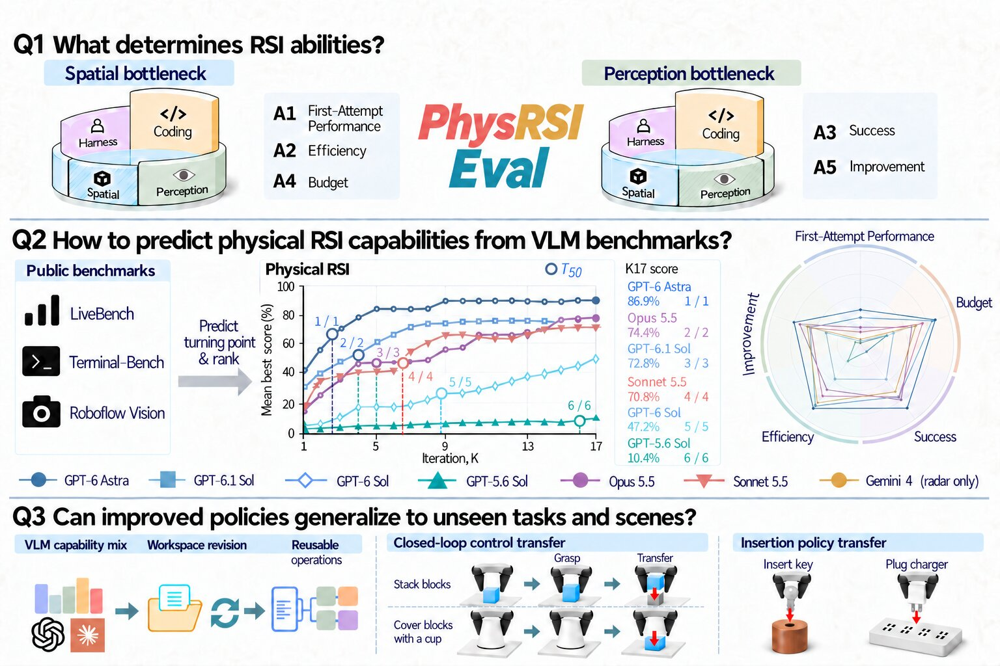
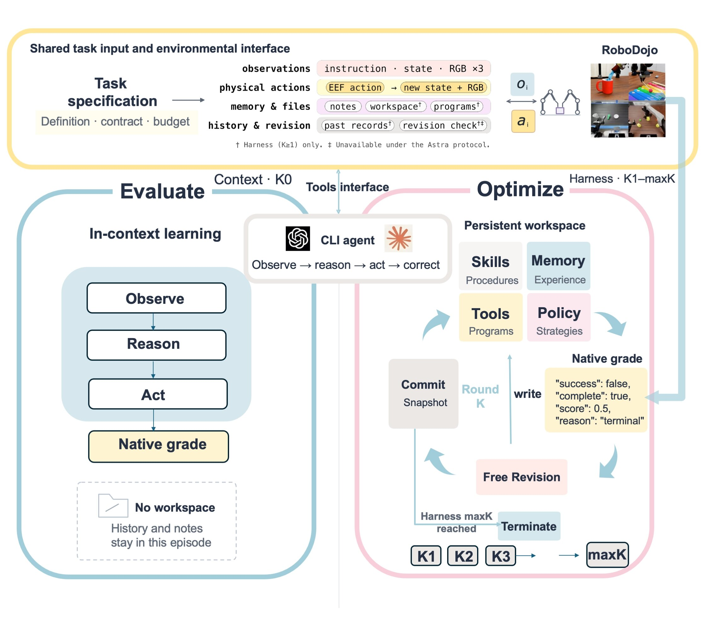
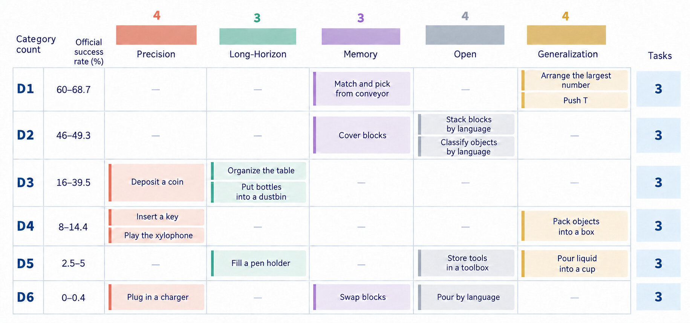
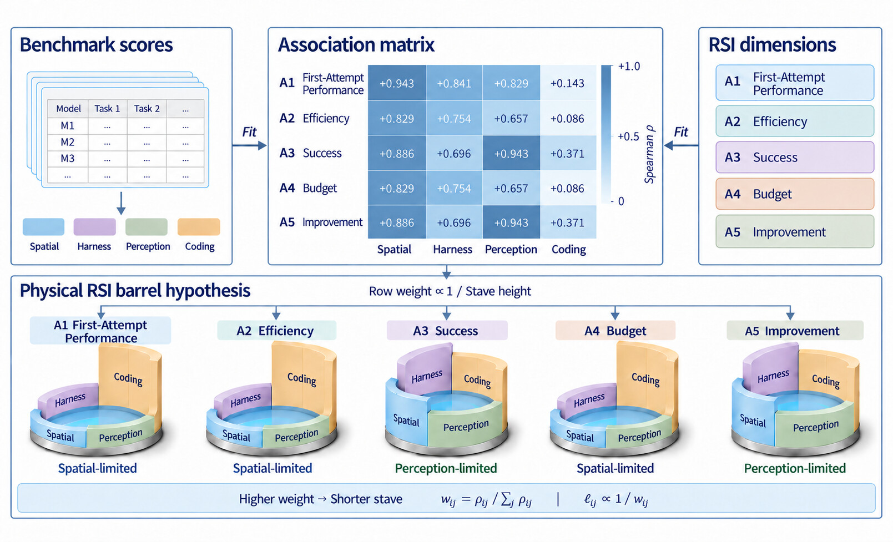
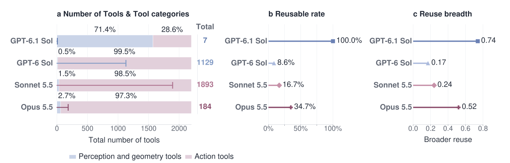

大模型直接当机器人策略，自我进化的能力从哪来？
银河通用团队发布 PhysRSI-Eval：用五个维度刻画“物理递归自我改进”，并给出一条 LLM-as-policy 的观测型 Scaling Law。

前沿大模型已经可以直接为机器人生成动作。更进一步，它们还能在一次次试错中改写技能、编写代码、制作工具，让自己的操作水平越来越高。模型权重不变，进步全部来自与物理世界的交互和自我修订。我们把这个过程称为物理递归自我改进（Physical Recursive Self-Improvement，物理 RSI）。
这篇工作不再只是展示“大模型能做到什么”，而是追问三个更基础的问题：
- Q1 物理 RSI 的能力来自哪里？
- Q2 如何量化物理 RSI？它遵循怎样的 Scaling Law？
- Q3 模型的进步是对练习场景的过拟合，还是可迁移的泛化？
基准：一个受控的物理试错闭环
PhysRSI-Eval 把每个任务拆成两个阶段，共用同一套接口。评估阶段（K0）：模型在没有任何积累的情况下，通过共享工具完成一次上下文内尝试。优化阶段（K1–K17）：模型拥有一个持久化的工作区，里面存放它自己写的技能、工具、策略和记忆。每一轮先执行并由任务原生判定打分，再在机器人动作关闭的情况下修订工作区，然后提交进入下一轮，直到首次成功或用完轮次预算。

任务按 RoboDojo 官方成功率分为 D1（最容易）到 D6（最难）六个难度层，每层选 3 个，覆盖 RoboDojo 全部五个官方任务类别。被测系统包括 GPT-6 Astra、GPT-6.1 Sol、GPT-6 Sol、GPT-5.6 Sol、Claude Opus 5.5、Claude Sonnet 5.5，另有 Gemini 4 在 10 个任务上单独评测。

只看最终得分无法刻画自我改进：它说不清进步发生在什么时候、花了多少交互，也分不清是真的学会了还是多试几次碰上了。为此论文提出五维指标：
- A1 首次尝试表现
- 不经任何改进时的起点有多高
- A2 效率
- 增益来得有多早
- A3 成功
- 最终能达到多高的得分
- A4 预算
- 节省了多少物理交互
- A5 改进
- 能否从失败中恢复过来
Q1物理 RSI 的能力从哪来？
论文把 17 个公开基准归为四组能力：空间推理（Spatial）、智能体框架使用（Harness）、感知（Perception）和编程（Coding），再计算它们与五个维度在六个系统上的秩相关。
- 空间推理与首次尝试表现（A1）的相关最强，ρ = 0.94；与效率（A2）、预算（A4）也达到 0.83。
- 感知与成功（A3）、改进（A5）的相关最强，ρ = 0.94。
- 编程与每个维度的相关都最弱，ρ ≤ 0.37。

自我改进的不同方面，可能受不同能力的制约：开局好靠空间推理，读懂失败、从失败中恢复靠感知。编程能力再强，也不一定能补上别处的短板。
作者强调，这些关联提示的是候选瓶颈，并不构成因果结论。
Q2如何量化物理 RSI 与它的 Scaling Law？
得分高、涨得快、花得少，三者可以分离
五维画像把这些差异摆到了台面上。例如 Claude Opus 5.5 的最终成功分高于 GPT-6.1 Sol（0.744 对 0.703），但效率（0.609 对 0.822）和预算（0.579 对 0.808）明显落后。最终得分更高，并不代表进步更早，也不代表交互更省。
| 系统 | 任务数 | A1 首次尝试 | A2 效率 | A3 成功 | A4 预算 | A5 改进 |
|---|---|---|---|---|---|---|
| GPT-6 Astra | 18 | 0.368 | 0.859 | 0.851 | 0.843 | 0.750 |
| GPT-6.1 Sol | 18 | 0.284 | 0.822 | 0.703 | 0.808 | 0.571 |
| GPT-6 Sol | 18 | 0.031 | 0.466 | 0.472 | 0.372 | 0.389 |
| GPT-5.6 Sol | 18 | 0.012 | 0.225 | 0.104 | 0.301 | 0.056 |
| Claude Opus 5.5 | 18 | 0.177 | 0.609 | 0.744 | 0.579 | 0.688 |
| Claude Sonnet 5.5 | 18 | 0.124 | 0.695 | 0.701 | 0.698 | 0.563 |
| Gemini 4* | 10 | 0.050 | 0.783 | 0.635 | 0.624 | 0.600 |
五维画像（K0 分数为每任务三次运行的均值）。*Gemini 4 仅在 10 个任务上评测，每任务一次 K0 运行。

公开榜单上的差距，在物理世界里会被放大
四个 GPT 系统在公开基准上的平均分只相差 24 分，五维物理画像的均值却相差 59.5 分。GPT-5.6 Sol 在整整 16 轮里累计成功几乎为零。

观测型 Scaling：能涨多高，多早能涨？
沿用 observational scaling 的思路，论文用 17 个公开基准构建每个系统的四维能力画像，每次留出一对系统，用其余四个预测它们的排名。结果显示，公开能力画像复现了两项观测排序：K17 时达到的最好得分，以及半程增益轮次 T50（最好均分首次达到其 K1–K17 总增益一半的轮次）。

前几轮的物理反馈，能预测后面多少？
以 GPT-6 Astra 的改进曲线拟合一个 Weibull 模板，只用 GPT-6.1 Sol 的 K1–K5 做校准，就能预测它 K6–K17 的走势，平均绝对误差 0.019；作为对照，直接沿用最后一个观测值的误差是 0.112。

Q3是过拟合，还是泛化？
分数上升本身回答不了这个问题。论文设计了三组干预：去掉历史、在没见过的布局上冻结工作区测试、把工作区迁移到别的任务。
- 积累的经验确实有用。在 Astra 的 6 任务消融中（每轮更换布局），后期轮次成功率在完整闭环下为 41.7%，去掉历史后降到 8.3%。
- 冻结的工作区在新布局上依然管用。K6 之后停止修订、也不给反馈，只用工作区文件在 5 个未见布局上测试，60 次中成功 25 次（41.7%）。在固定布局上练出来的工作区，换到新布局成功率为 45.0%，在原布局上则是 88%，说明场景特化同样存在。
- 经验可以跨任务复用。用其他任务汇总的工作区初始化后，三个案例的首次成功都大幅提前：Sonnet 5.5 的 Cover Blocks 从 K9 提前到 K1，Opus 5.5 的 Organize Table 从 K14 到 K7，Deposit Coin 从 K15 到 K8。

经验沉淀在哪里？Sonnet 5.5 和 Opus 5.5 会把控制逻辑写进自己编写的工具，后期轮次中超过 96% 的动作由这些工具生成。其中 Opus 复用的工具箱最广，工具谱系复用率为 0.347，Sonnet 为 0.167，GPT-6 Sol 为 0.086。

这些结果表明，场景特化的适应与可复用的经验可以同时存在。
结语
PhysRSI-Eval 在固定交互预算下，系统研究了物理 RSI 的来源、度量、Scaling 与泛化。能开好局的能力，未必是能持续进步的能力；高分、早涨、省交互也未必同时出现。理解物理 RSI，既要量化智能体如何进步，也要看清它在进步中留下了什么。
作者也说明了当前工作的边界：主实验覆盖六个系统、每任务一条改进链；能力瓶颈与增益时机的预测仍是待检验的假设；消融与冻结测试只覆盖 Astra 和 6 个任务，跨任务结果来自 3 个案例。
欢迎阅读论文、访问项目主页和代码仓库：
论文 https://arxiv.org/abs/2610.26848
主页 https://physrsi-eval.github.io/
代码 https://github.com/PhysRSI-Eval/PhysRSI-Eval-code